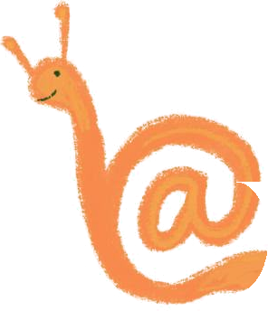
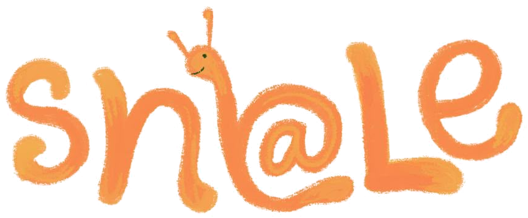

On the way.
Snale is made by creatives for creatives to get back to what they do best: creating. There's no endless feed, no addictive algorithm, and nothing made by machines.


Snale is made by creatives for creatives to get back to what they do best: creating. There's no endless feed, no addictive algorithm, and nothing made by machines.